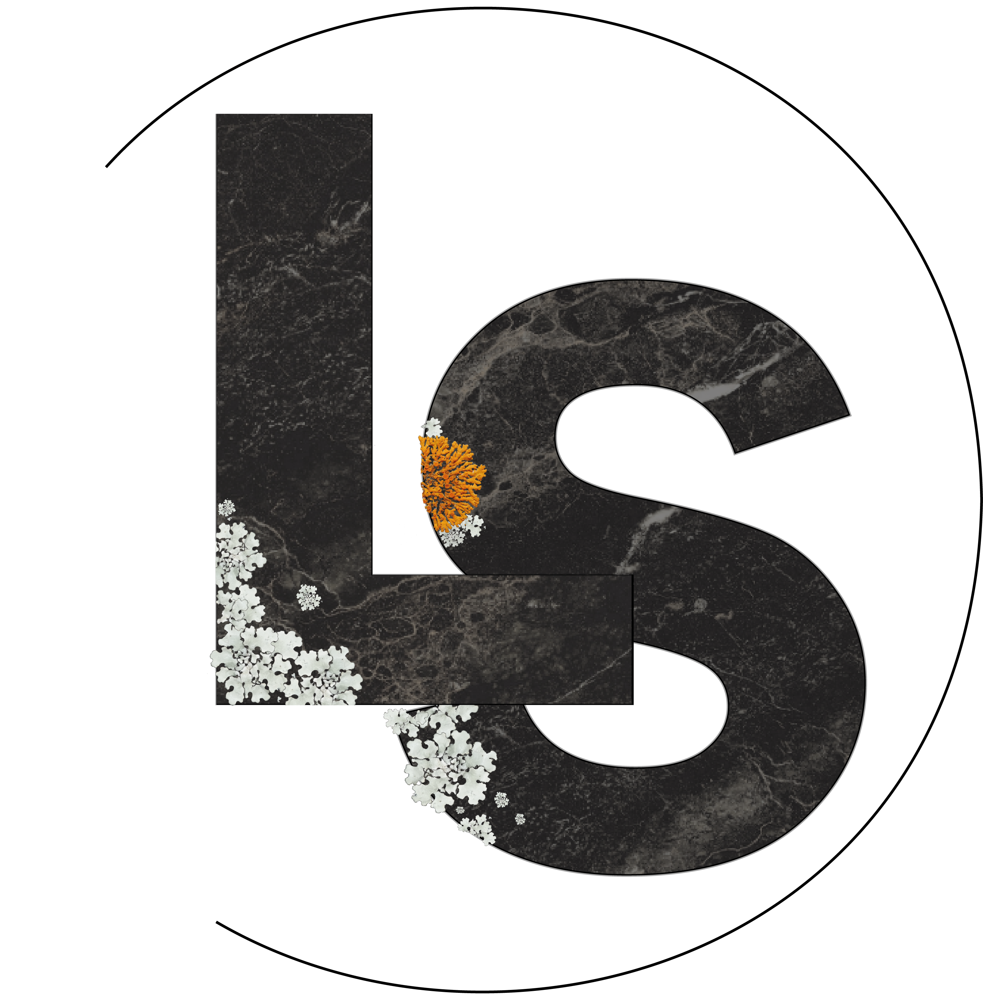
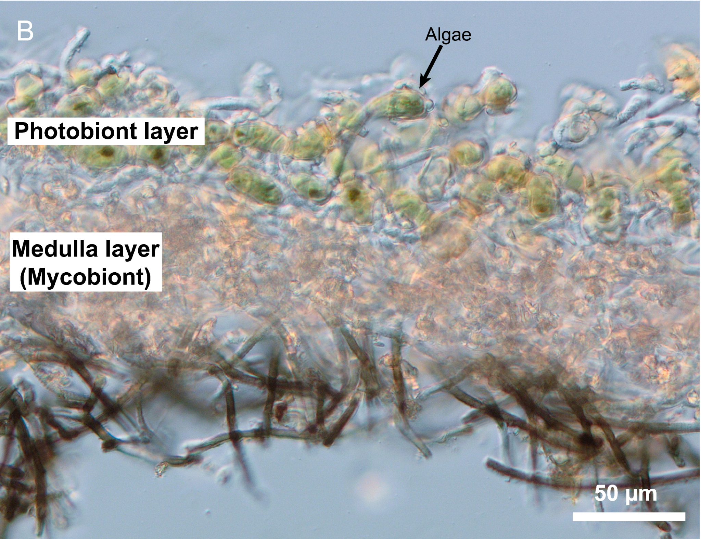
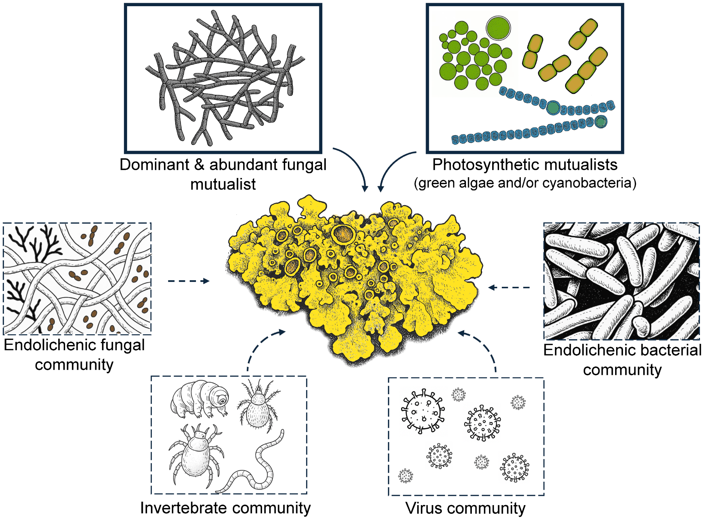
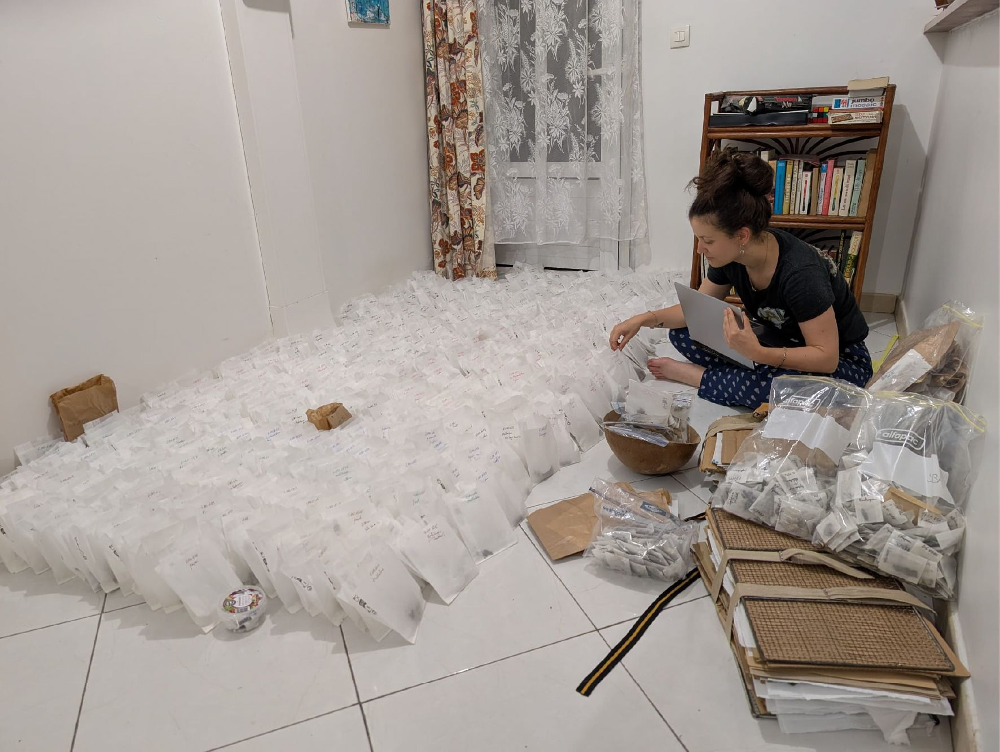
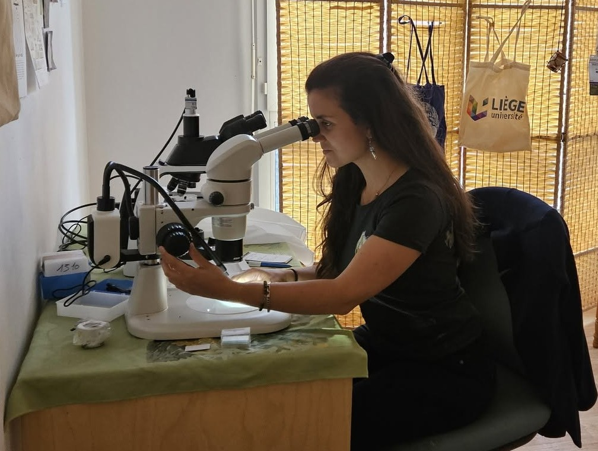
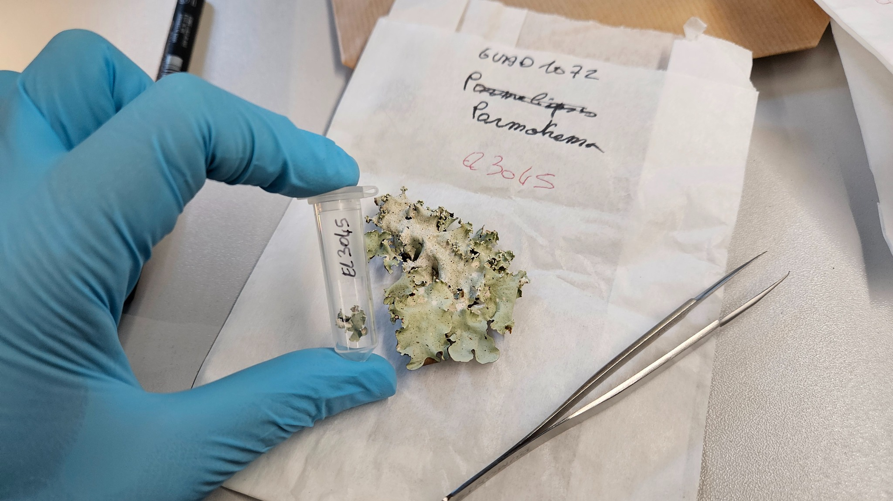
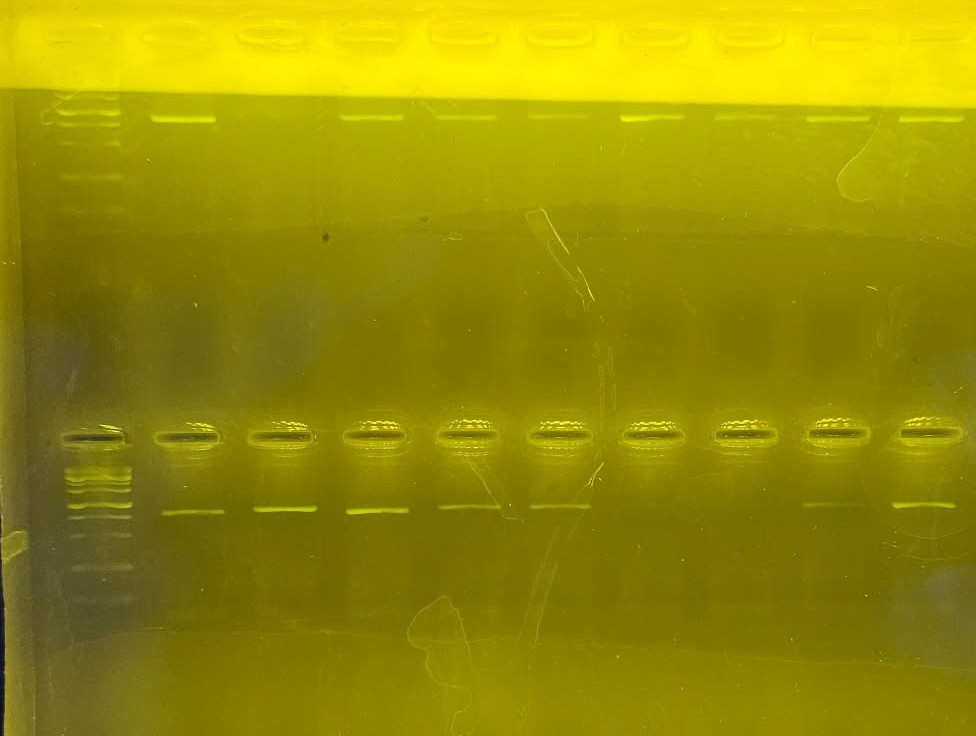

LichenScope
Independent research in lichenology
I founded LichenScope as a research initiative to document lichen diversity, build scientific collections and share knowledge, working alongside researchers, conservation organisations and lichen enthusiasts.

About
I founded LichenScope in January 2026 to pursue my research and provide expertise in regions with few lichenologists. Through consultancy projects, I conduct fieldwork to document lichen diversity and produce reliable data for research and conservation. Where possible, I complement these inventories with DNA barcode data linked to herbarium specimens. I share the resulting knowledge through collaborations and peer-reviewed publications.
My ambition is to pursue and develop this work within a research institution, such as a university or a natural history museum.
Why do lichens matter?
A lichen results from a symbiotic association between a fungus and one or more photosynthetic partners: green algae, cyanobacteria, or both. In most cases, the fungus makes up most of the biomass, protecting and "exploiting" its photosynthetic partners, which supply it with sugars and related compounds derived from photosynthesis.
Other organisms, including fungi and bacteria, also live on and within lichens. Identifying these organisms and exploring their functions is an active area of research that continues to reshape our understanding of this association.


Six reasons to take a closer look at lichens
A remarkable system for understanding how organisms live together
Studying lichens means exploring interactions between several major branches of the tree of life: fungi, algae and bacteria. Lichenology lies at the crossroads of several fields, including microbiology, mycology, phycology, ecology, chemistry and evolutionary biology. It is a complex discipline, but this complexity is precisely what makes it so fascinating, opening up a wide range of research questions.
All around us, yet still little known
Lichens occur on every continent, from tropical forests to polar regions. Some species inhabit freshwater, marine intertidal zones or even deserts. Certain species have even survived exposure to simulated Martian conditions in lab experiments.
They are an integral part of our everyday surroundings, often without us noticing: on trees, rocks, soil, walls, pavements, road signs…
Around 20,000 species have been described so far, and new species continue to be discovered every year. Distinct evolutionary lineages can hide behind very similar morphologies (i.e. cryptic diversity).
Identifying and naming this diversity remains a vast scientific undertaking, especially in the tropics. Taxonomy (the art of describing and naming lichens) provides the essential foundation for all other studies of these organisms.
Small organisms with many ecological roles
Lichens contribute to ecosystem functioning in many ways. To give just a few important examples, they help weather rocks and accumulate the organic matter needed for other organisms, including plants, to develop. Within biological soil crusts, they also help stabilise surfaces and limit erosion.
Cyanolichens fix atmospheric nitrogen and contribute to nitrogen cycling in ecosystems. Lichens also intercept and temporarily retain water, helping to maintain moisture within their microhabitats. These provide a home for many small organisms, including tardigrades, ants, mites…
They are also an essential food source for various animals, such as reindeer, and provide shelter, camouflage for insects and nesting materials for birds. Their ecological importance extends beyond their own diversity.
Sentinels of air quality
Lichens can alert us to changes in their environment. Some species decline as air pollution increases, while others tolerate or thrive under nitrogen-enriched conditions.
Studying their communities allows us to monitor the effects of pollution on living organisms. In Europe, this approach is supported notably by the EN 16413 standard. Developing methods tailored to local species and conditions is a key challenge in extending these approaches to other regions.
Indicators of habitat conditions and history
Some lichen species have specific ecological requirements. Their presence can provide information about the ecological continuity of a forest, helping us recognise ancient or relatively undisturbed habitats. Tracking their communities and distribution over time also allows us to study the consequences of climate change.
Chemical diversity to explore
Around 1,000 metabolites (chemical compounds) have been characterised in lichens, most of which are produced only by these organisms. Their chemical potential remains largely unexplored. Understanding the functions and evolution of these substances opens up opportunities in ecology, biotechnology and pharmaceutical research.
Lichens have also been part of human history for a very long time: they have provided dyes, including purple dyes used to colour textiles in ancient Rome, and raw materials for perfumery. They were even used for mummification in ancient Egypt.
Widespread biodiversity and rare expertise
Lichenologists are sometimes as inconspicuous as the organisms they study. In France, lichenology is officially recognised as a rare discipline by the Ministry of Higher Education and Research.
With so much still to discover about lichens and few specialists to study them, training new generations of lichenologists and sharing what we have learned with people of all backgrounds are essential to preserve centuries of accumulated knowledge and continue to advance our understanding of these organisms.
This is the spirit that led me to create LichenScope: a way to continue my research, build new collaborations and share knowledge.
What LichenScope does
Field surveys
I design and carry out lichen inventories, from developing sampling strategies and arranging permits to coordinating field logistics and collecting specimens.
Morphological & molecular identification
I combine morphological and anatomical examination with DNA barcoding (ITS, mtSSU and LSU) to identify lichens at species level.
Collection development & curation
I prepare, document and curate voucher specimens for deposition in herbaria and the development of reference collections. I maintain the link between specimens, identifications, collection data and associated DNA sequences.
Project design & grant management
I write funding proposals, develop budgets and coordinate externally funded projects, from single-site inventories to expeditions involving multiple partners.
Selected projects
Recent & ongoing work
Lichen inventory of Guadeloupe
I lead a lichen inventory on Guadeloupe's two main islands, Basse-Terre and Grande-Terre. The project includes compiling a species checklist and establishing the first dedicated lichen collection at the GUAD herbarium. This work is carried out in collaboration with Meise Botanic Garden and the University of Liège. Funded by the Guadeloupe Botanical Conservatory (CBNIG), ARBIG and DEAL Guadeloupe.
Saba Estafette Expedition — Critter Quest 2
At the invitation of the founder of the Saba Estafette Expedition, I joined Critter Quest 2 on Saba (Dutch Caribbean) and co-led its lichen expedition. This checklist is conducted in collaboration with Naturalis Biodiversity Center and the Botanic Garden and Botanical Museum Berlin (BGBM), with funding from the Sea & Learn Foundation and the Hugo de Vries Fonds.
Lichen inventory in French Guiana (upcoming)
I will lead a three-week field expedition to the Réserve naturelle nationale de La Trinité to document lichen diversity and establish a baseline dataset for the reserve.
From fieldwork to the lab




